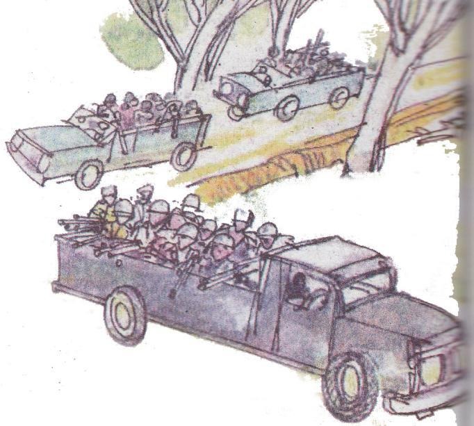
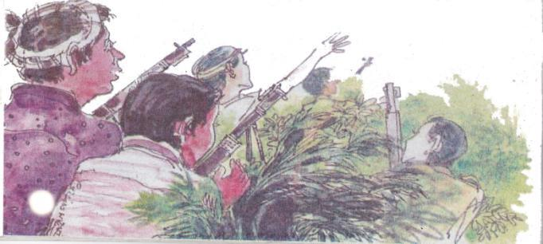
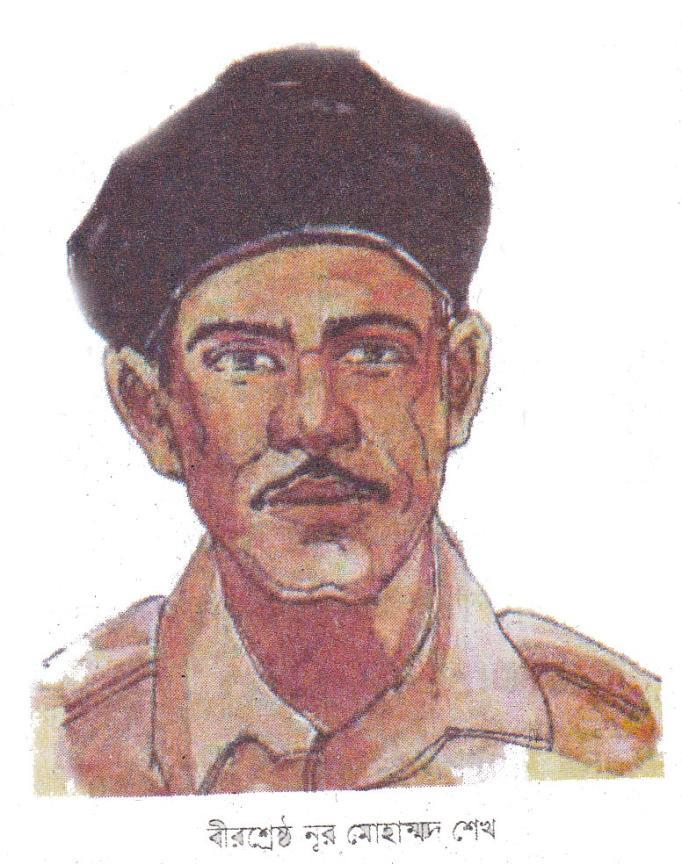
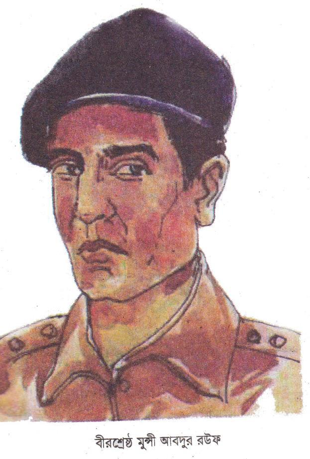

বীরের রক্তে স্বাধীন এ দেশ
দুরন্ত এক কিশোর। নাম নুর মোহাম্মদ শেখ। বাবা-মায়ের একমাত্র সন্তান। নাটক, থিয়েটার আর গানের প্রতি তাঁর প্রবল অনুরাগ। কিশোর বয়সে হঠাৎ করে তার বাবা-মা মারা গেলেন। বদলে গেল তার জীবন। যোগ দিলেন ইপিআর-এ অর্থাৎ ইস্ট পাকিস্তান রাইফেলস-এ।

সময়টা ১৯৭১ সালের ৫ই সেপ্টেম্বর।
যশোরের পাকিস্তানি ছুটিপুর ক্যাম্প। একটু দূরে গোয়ালহাটি গ্রামে টহল দিচ্ছিলেন পাঁচ মুক্তিযোদ্ধা। এঁদেরই নেতৃত্বে ছিলেন ল্যান্স নায়েক নূর মোহাম্মদ শেখ। পাকিস্তানি সেনারা টের পেয়ে যায় মুক্তিযোদ্ধাদের অবস্থান। রাজাকারদের সহায়তায় তিন দিক থেকে পাকিস্তানি সেনারা তাঁদের ঘিরে ফেলে। কিন্তু মুক্তিযোদ্ধারা দমবার পাত্র নন। এই দলেই ছিলেন অসীম সাহসী মুক্তিযোদ্ধা নান্নু মিয়া। কিন্তু প্রতিপক্ষের একটা গুলি হঠাৎ এসে লাগে তাঁর গায়ে। নূর মোহাম্মদ তাঁকে এক হাত দিয়ে কাঁধে তুলে নিলেন আর অন্য হাত দিয়ে গুলি চালাতে থাকলেন। কৌশল হিসেবে বারবার নিজের অবস্থান পরিবর্তন করতে থাকলেন তিনি। উদ্দেশ্য-একজন নন, অনেক মুক্তিযোদ্ধা যুদ্ধ করছেন-শত্রুদের এরকম একটা ধারণা দেওয়া। সংখ্যায় কম বলে সহযোদ্ধাদের নির্দেশ দিলেন পিছিয়ে গিয়ে অবস্থান নিতে।
কিন্তু হঠাৎ মর্টারের একটা গোলা এসে লাগল তাঁর পায়ে। গোলার আঘাতে চূর্ণ-বিচূর্ণ হয়ে গেল তাঁর পা। তিনি বুঝতে পারলেন মৃত্যু আসন্ন। যতক্ষণ সম্ভব গুলি চালাতে চালাতে তিনি শহিদ হলেন। নিজের জীবনকে তুচ্ছ করে নূর মোহাম্মদ শেখ এভাবেই রক্ষা করেছিলেন মুক্তিযোদ্ধাদের জীবন। সাহসী এই বীরশ্রেষ্ঠ মুক্তিযোদ্ধার জন্ম ১৯৩৬ সালের ২৬শে ফেব্রুয়ারি নড়াইলের মহিষখোলা গ্রামে।


এরকমই আরেক যোদ্ধা বীরশ্রেষ্ঠ সিপাহী মুন্সী আবদুর রউফ। ১৯৪৩ সালের ৮ই মে ফরিদপুর জেলার বোয়ালমারি থানার সালামতপুর গ্রামে জন্মগ্রহণ করেন। ছেলেবেলায় দারুণ দুরন্ত ছিলেন। তিনিও ইপিআর বাহিনীতে যোগ দেন। মেশিন-চালক হিসেবে সুনাম অর্জন করেন। মুক্তিযুদ্ধ শুরু হলে ইস্ট বেঙ্গল রেজিমেন্টের বাঙালি সৈনিকদের মতো মুক্তিযুদ্ধে ঝাঁপিয়ে পড়েন।
দিনটি ছিল একাত্তরের ৮ই এপ্রিল। ঐদিন মুক্তিযোদ্ধারা পাকিস্তানি নৌসেনাদের উপর আক্রমণ করবে। এজন্যে তাঁরা মহালছড়ির কাছে বুড়িঘাট এলাকার চিংড়ি খালের দুই পাশে অবস্থান গ্রহণ করেন। পাকিস্তানি সৈন্যরা মুক্তিযোদ্ধাদের আক্রমণ করতে এগিয়ে আসে। সাথে নিয়ে আসে সাতটি স্পিডবোট আর দুটি মোটর লঞ্চ। স্বল্প সংখ্যক মুক্তিযোদ্ধার মৃত্যু ছিল অবধারিত। তবু মুক্তিযোদ্ধারা পালিয়ে যাননি। আবদুর রউফ নিজেই দায়িত্ব নিলেন নিজের জীবন দিয়ে সবাইকে রক্ষা করব। হালকা একটা মেশিনগান হাতে তুলে নিয়ে গুলি ছুঁড়ে শত্রুদের রুখে দিতে থাকলেন। সহযোদ্ধাদের বললেন, নিরাপদে সরে যেতে। মুক্তিযোদ্ধাদের আক্রমণে পাকিস্তানিদের সাতটি স্পিডবোটই ডুবে গেল। বাকি লঞ্চ দুটো থেকে গুলি ছুঁড়তে ছুঁড়তে তারা পিছু হটতে থাকল। এরকম মুহূর্তেই হঠাৎ একটা গোলা এসে পড়ল তাঁর উপর, তিনি শহিদ হলেন। বীরের রক্তস্রোতে রঞ্জিত হলো মাটি। রাঙামাটি জেলার বোর্ড বাজারের কাছে নানিয়াচরের চিংড়িখালের কাছাকাছি একটি টিলার উপর সমাহিত হন বীরশ্রেষ্ঠ মুন্সী আবদুর রউফ। পরবর্তী সময়ে সমাধিকে স্মৃতিস্তম্ভে রুপান্তরিত করে সরকার।

একাত্তরে পাকিস্তানি সেনাবাহিনীর বিরুদ্ধে কতভাবেই না যুদ্ধ করতে হয়েছিল আমাদের। এই যুদ্ধে জয়ী বাহিনী হিসেবে মুক্তিযোদ্ধারা বয়ে এনেছেন অসীম গৌরব। এরকমই এক যুদ্ধে শহিদ হন বীরশ্রেষ্ঠ মোহাম্মদ রুহুল আমিন।
ডিসেম্বরের ১০ তারিখ। মুক্তিযুদ্ধের শেষ প্রান্তে আমরা। মুক্তিযোদ্ধাদের নৌজাহাজ বিএনএস পলাশ এবং বিএ-নএস পদ্মা মংলা বন্দর দখল করে নিয়েছে। এবার খুলনা দখলই লক্ষ্য। ভৈরব নদী বেয়ে খুলনার দিকে ধেয়ে আসছেন তাঁরা।
জাহাজ দুটি খুলনার কাছাকাছি চলে আসে। এমন সময় একটা বোমারু বিমান থেকে জাহাজ দুটির উপর বোমা এসে পড়ে। রুহুল আমিন বিএনএস পলাশের ইঞ্জিনরুমে ছিলেন। ইঞ্জিনরুমের ওপরে বোমা পড়েছিল। ইঞ্জিন বিকল হয়ে আগুন ধরে গিয়েছিল পলাশে। তাঁর ডান হাতটি উড়ে গিয়েছিল। তিনি আহত অবস্থায় ঝাঁপ দিয়ে নদী সাঁতরে পাড়ে উঠলেন। বোমার আঘাত থেকে তিনি রক্ষা পেলেন। কিন্তু রাজাকারদের হাতে নির্মমভাবে মৃত্যু হলো তাঁর। তিনি শহিদ হলেন। খুলনা শিপইয়ার্ডের কাছেই চিরনিদ্রায় শায়িত আছেন এই বীর মুক্তিযোদ্ধা। এখানে একটি স্মৃতিস্তম্ভ নির্মাণ করা হয়েছে।
বাংলাদেশ আজ মুক্ত। লক্ষ প্রাণের বিনিময়ে আমরা ১৯৭১ সালের ১৬ই ডিসেম্বর বিজয় অর্জন করি। দেশের এ বীরশ্রেষ্ঠ মুক্তিযোদ্ধাদের জন্য গবির্ত আমরা।
অনুশীলনী
১. শব্দগুলো পাঠ থেকে খুঁজে বের করি। অর্থ বলি।
|
টহল |
আসন্ন |
অবধারিত |
|
রক্তস্রোতে |
রঞ্জিত |
শায়িত |
২. ঘরের ভিতরের শব্দগুলো খালি জায়গায় বসিয়ে বাক্য তৈরি করি।
|
নূর মোহাম্মদ শেখ |
নান্নু মিয়া |
শিপইয়ার্ডের |
১৯৪৩ ১লা মে |
রুহুল আমিন |
ক. ল্যান্স নায়েক নূর মোহাম্মদ শেখের দলে ছিলেন অসীম সাহসী মুক্তিযোদ্ধা [……………………………………………… ..]।
২৯খ. নিজের জীবনকে তুচ্ছ করে [………………………………………….] সেদিন এভাবেই রক্ষা করেছিলেন মুক্তিযোদ্ধাদের জীবন।
গ. সিপাহী মুন্সী আবদুর রউফ [………………………] সালের […………………..] মে ফরিদপুর জেলার বোয়ালমারি থানার সালামতপুর গ্রামে জন্মগ্রহণ করেন।
ঘ. খুলনা […………………………………] কাছেই চিরনিদ্রায় শায়িত আছেন বীরশ্রেষ্ঠ রুহুল আমিন।
৩. প্রশ্নগুলোর উত্তর বলি ও লিখি।
ক. নূর মোহাম্মদ শেখ কীভাবে নিজের জীবন তুচ্ছ করে মুক্তিযোদ্ধাদের জীবন বাঁচিয়ে ছিলেন?
খ. ল্যান্সনায়েক মুন্সী আব্দুর রউফের যুদ্ধের ঘটনাটা লিখি।
গ. বীরশ্রেষ্ঠ রুহুল আমিন কীভাবে শহিদ হয়েছিলেন?
ঘ. গল্প থেকে মুক্তিযুদ্ধের সময় বীরযোদ্ধাদের সম্পর্কে যা জেনেছি তা নিজের ভাষায় লিখি।
৪. ব্যাখ্যা করি।
দেশের এ বীরশ্রেষ্ঠ মুক্তিযোদ্ধাদের জন্য গর্বিত আমরা।
৫. বিপরীত শব্দ লিখি এবং তা দিয়ে একটি করে বাক্য লিখি।
|
দুরন্ত |
শান্ত |
শান্ত ছেলেটি শুধু পড়তে ভালোবাসে। |
|
অসীম |
[……………………..] |
[……………………..] |
|
সুনাম |
[……………………..] |
[……………………..] |
|
বীর |
[……………………..] |
[……………………..] |
|
জয় |
[……………………..] |
[……………………..] |
|
জীবন |
[……………………..] |
[……………………..] |
৬. ঠিক উত্তরটিতে টিক () চিহ্ন দিই।
ক. বাবা মারা যাওয়ার পর নূর মোহাম্মদ কিসে যোগ দিলেন?
১. বাংলাদেশ রাইফেলসে
২. ইস্ট পাকিস্তান রাইফেলসে
৩. বাংলাদেশ নেভিতে
৪. কোনটিই না
খ. বীরশ্রেষ্ঠ মুক্তিযোদ্ধা নূর মোহাম্মদ শেখ এর জন্ম –
১. ১৯৩৬ সালের ২৬শে ফেব্রুয়ারি
২. ১৯৩৮ সালের ২৬শে ফেব্রুয়ারি
৩. ১৯৩৫ সালের ২৬শে জানুয়ারি
৪. ১৯৩৭ সালের ২৬শে জানুয়ারি
গ. মুক্তিযোদ্ধাদের আক্রমণে পাকিস্তানিদের কয়টি স্পীডবোট ডুবে গিয়েছিল?
১. পাঁচটি
২. আটটি
৩. সাতটি
৪. নয়টি
ঘ. বীরশ্রেষ্ঠ মুন্সী আবদুর রউফকে সমাহিত করা হয়-
১. বোয়ালমারির সালামতপুর
২. বক্সিবাজার
৩. নানিয়ারচরের চিংড়িখাল
৪. বুড়িঘাট
ঙ. খুলনা শিপইয়ার্ডের কাছেই চিরনিদ্রায় শায়িত আছেন বীর মুক্তিযোদ্ধা-
১. নূর মোহাম্মদ শেখ
২. মুন্সী আবদুর রউফ
৩. মোস্তফা কামাল
৪. মোহাম্মদ রুহুল আমিন
৭. আমাদের জাতীয় দিবসগুলোর পাশে তারিখবাচক শব্দ লিখি।
ক. শহিদ দিবস -
খ. স্বাধীনতা দিবস -
গ. বাংলা নববর্ষ -
ঘ. শহিদ বুদ্ধিজীবি দিবস -
ঙ. বিজয় দিবস -
৩১